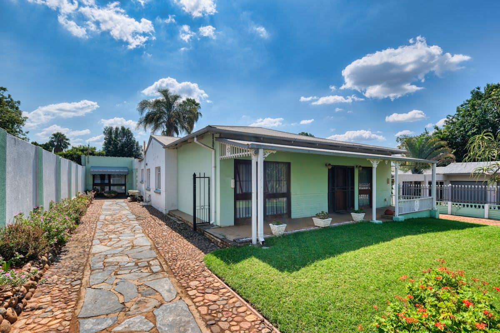
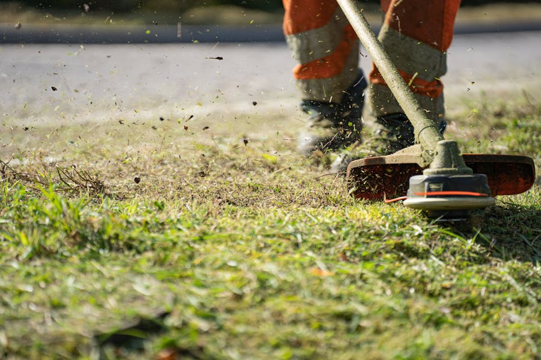
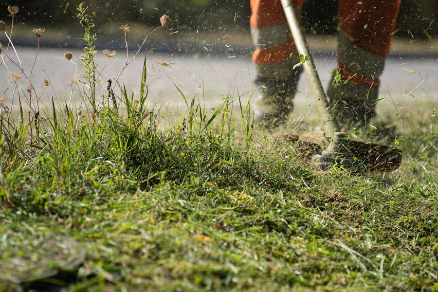

San Antonio, FL 33576 • HOA Compliance Specialists
Call Now: (352) 206-6203Mirada is one of Florida's most ambitious master-planned communities — a 2,300-acre development in San Antonio, FL built around a stunning 15-acre Crystal Lagoon, one of the largest man-made lagoons in the Western Hemisphere. With thousands of homes planned across multiple phases and builders like MI Homes, Lennar, Taylor Morrison, and Park Square Homes constructing new properties at a rapid pace, Mirada represents the new face of Pasco County living.
And with that premium community come high lawn care standards. Mirada's HOA has clear expectations for every home's curb appeal — consistent mowing, clean vertical edging, tidy mulch beds, and properly maintained turf. For new homeowners moving in from out of state, Florida's lawn care schedule can be a surprise: in the summer rainy season from June through September, St. Augustine Floratam grass in San Antonio can grow two to three inches per week. Without a reliable weekly mowing schedule, you will receive HOA notices — and your lawn will look out of place in a neighborhood defined by precision.
LawnWorx LLC serves Mirada homeowners with professional, consistent lawn care that meets and exceeds HOA standards. Our crews are trained on St. Augustine Floratam — the grass type installed by virtually every Mirada builder — and we understand the specific establishment care that new construction sod requires. Builder-installed sod is typically laid on compacted, nutrient-poor sandy fill. Without regular fertilization and proper irrigation management, that sod will thin, yellow, and struggle to spread. We bring the expertise to get your new lawn thriving fast and keep it that way.
Every LawnWorx visit to Mirada includes precision mowing at the correct Floratam height (3.5 to 4 inches), complete weed eating and trimming along all fences and landscape edges, sharp vertical edging along driveways and curbs, blowing all clippings from paved surfaces, and closing every gate behind us. We operate as an extension of your household — dependable, professional, and detail-oriented every single time.
We serve every section of Mirada, from the original lagoon-front phases to the newest construction on the community's expanding perimeter — plus nearby neighborhoods along the SR-52 corridor.

The original home sections surrounding the 15-acre Crystal Lagoon. These properties are held to the highest HOA standards and are most visible to the community — curb appeal here matters most.
Rapidly expanding sections by MI Homes, Taylor Morrison, and Lennar. New sod requires special attention to fertilization and establishment care — we specialize in this transition from builder warranty to long-term health.
An established community adjacent to the Mirada development in San Antonio. Mix of newer builds and older homes on slightly larger lots with mature landscaping.
A neighboring subdivision in the San Antonio area with family-oriented streets and well-kept front yards. Consistent mowing and fertilizing keeps Pasco Trails lawns in top shape year-round.
Properties near Saint Leo University in San Antonio, FL. A mix of residential and campus-adjacent homes. We serve homeowners throughout this quiet community.
Rural and semi-rural properties along SR-52 between San Antonio and Zephyrhills. Larger lots with Bahia grass, brush clearing needs, and less frequent mowing schedules available.
Mirada sits on what was formerly flat Florida pastureland and wetland in Pasco County — one of the flattest areas in an already flat state. That flat terrain means excellent drainage in some areas and standing water challenges in others. Understanding how to manage your lawn in this specific environment is key to keeping your turf healthy and your HOA satisfied.
Grass in Mirada: Nearly every home in Mirada was built with St. Augustine Floratam sod — the standard for Florida master-planned communities. Floratam is a warm-season, broad-bladed grass with a naturally dark green color that performs beautifully in full-sun Florida conditions. It thrives in the heat and humidity of Pasco County summers but requires specific care: never mow below 3.5 inches (scalping invites chinch bugs and disease), never let it go dormant from drought stress, and always fertilize with a slow-release product formulated for Florida's sandy soils.
Builder Sod and Soil Quality: One of the most important things Mirada homeowners need to know is that builder-installed sod is typically laid over compacted sandy fill soil. This soil has very little organic matter or natural fertility. In the first two years after moving in, your lawn is essentially surviving on builder fertilizer applications that may have already run out. LawnWorx recommends starting a regular 4–5 application per year fertilizing program as soon as you take possession. This builds the soil microbiome, feeds the Floratam through the sandy soil, and produces the dense, dark green turf that Mirada HOA standards expect.
Moisture Management in Mirada: The Crystal Lagoon and the surrounding retention ponds create a uniquely humid microclimate in parts of Mirada. This extra humidity at ground level encourages gray leaf spot fungus during the summer months — a common threat to St. Augustine Floratam. LawnWorx avoids this issue by mowing at the correct height (which promotes air circulation at the turf base), not overwatering through irrigation scheduling recommendations, and ensuring clippings are thoroughly cleared after each mow.
HOA Lawn Compliance in Mirada: Mirada's community standards require homeowners to maintain lawns in a neat, healthy, weed-free condition with defined edges and maintained garden beds. Failure to comply results in notices and fines. Our clients in Mirada have not received a single HOA violation since partnering with LawnWorx — because we understand exactly what the HOA inspectors look for and we deliver it on every single visit.
Seasonal Schedule for Mirada: April through October is the wet season and peak growth period — weekly mowing is essential. November through March is the dry and cooler season — bi-weekly mowing is typically sufficient, and this is the ideal time for potassium-heavy fertilization to harden the turf against brief cold periods. The absolute best time to apply pre-emergent weed control in Mirada is February through March, before summer weed seeds germinate in the warm soil.
Weekly mowing at 3.5–4 inches for Floratam — the correct height to maintain density, prevent disease entry, and keep your lawn HOA-compliant through every season.

Complete string trimming of all landscape edges, fence lines, and tree rings. Vertical edging along driveways and curbs for the sharp, defined look Mirada's HOA inspectors expect.
Fresh mulch in all garden beds reduces weeds, locks in moisture, and gives your home the finished, premium appearance that sets Mirada properties apart. We edge, install, and clean up.
Properly timed applications of Florida-formulated fertilizer to build soil nutrition in Mirada's sandy fill. Establishes root depth in new sod and maintains color and density in mature lawns.
Ornamental shrubs and privacy hedges shaped to clean, square lines. Mirada's landscaping typically includes viburnum, clusia, and other tropical shrubs that grow fast and need regular trimming.

Invasive vegetation along fence lines and property borders cleared before it becomes an HOA issue. Available for Mirada perimeter lots and properties along the SR-52 corridor.
LawnWorx LLC provides full lawn care in Mirada including weekly mowing, weed eating and precision edging, mulch installation, lawn fertilizing, hedge trimming, and brush clearing. We are HOA compliance specialists who understand Mirada's maintenance standards. Call (352) 206-6203 for a free estimate.
Yes. LawnWorx LLC provides regular lawn service throughout Mirada in San Antonio, FL 33576 — from the lagoon-front sections to the newest build phases. We know Mirada's HOA requirements and maintain a 100% compliance record across all properties we service in the community.
Mirada HOA compliance requires weekly mowing during the wet season (April–October), defined edges along all curbs and driveways, weed-free turf and beds, and maintained mulch in garden beds. LawnWorx handles all of this on a regular schedule so you never have to worry about a notice or fine.
Nearly all Mirada homes have St. Augustine Floratam sod installed by the builders. Floratam requires mowing at 3.5 to 4 inches, regular fertilization in sandy Florida soil, and consistent irrigation through the dry season. LawnWorx specializes in Floratam care and knows exactly how to keep it healthy year-round in Pasco County conditions.
Builder-installed sod is laid on compacted sandy fill that is low in nutrients. Without regular fertilization starting immediately after move-in, the sod will thin, yellow, and struggle to establish a deep root system. LawnWorx provides new construction establishment care — proper mowing height, 4–5 fertilizer applications per year, and expert monitoring — to get your Mirada lawn thriving from day one.
Pricing in Mirada depends on lot size, services needed, and frequency. LawnWorx offers competitive rates for mowing, fertilizing, mulch, and complete maintenance packages. Call (352) 206-6203 for a free, no-obligation estimate for your specific Mirada property.
The most common issues in Mirada include: nutrient depletion in sandy builder fill soil, chinch bug damage on Floratam in hot sunny areas, dollar weed in zones with excess moisture, gray leaf spot fungus in summer humidity near the lagoon, and rapid overgrowth during the June–September rainy season. Consistent weekly service and proper fertilization are the best defense against all of these.
LawnWorx LLC is a leading lawn care provider serving Mirada in San Antonio FL. We are licensed, insured, and have served Pasco County since 2018. Our crews know Florida grass types and HOA requirements inside and out. Call (352) 206-6203 or visit lawnworxfl.com to schedule service.